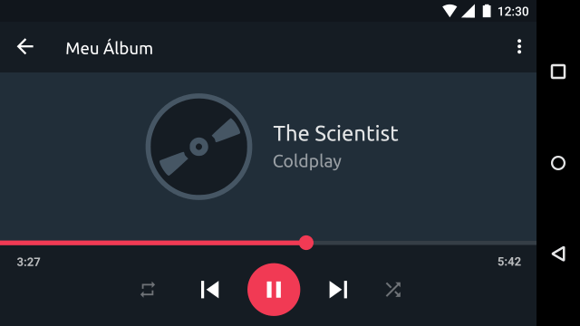
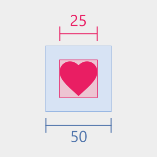

Estética e Design Minimalista
As interfaces que são atraentes são muito mais memoráveis e, portanto, geralmente são usadas com mais freqüência. Os usuários também se mostram mais tolerantes com as interfaces atraentes.
As interfaces não devem ser sobrecarregadas com uma grande quantidade de elementos. Os elementos na tela devem ser adequadamente alinhados e contrastados. Todas as informações devem ser visíveis e legíveis, tanto no modo retrato quanto no modo paisagem.
A interface deve ser projetada de forma que os itens não estejam nem muito distantes, nem muito perto. Os espaços de margem não devem ser muito grandes em telas pequenas para melhorar a visibilidade da informação. Quanto mais relacionados forem os elementos, mais perto eles devem aparecer na tela.
Os elementos diretamente relacionados estão agrupados e mais próximos, como os controles do tocador de música e as informações da música que está sendo tocada.

Os elementos da tela são reorganizados quando o dispositivo se encontra no modo paisagem.
Tamanho da área de toque
O tamanho da área de toque corresponde a todas as partes da tela que respondem ao toque do usuário e estão além dos limites visuais de um elemento. Por exemplo, um ícone pode parecer ter 25x25 unidades de medida, mas a área de toque completa que o circunda compreende 50x50 unidades de medida.

Enquanto a área rosa representa a imagem do ícone, a área azul representa a área de toque do ícone.
Qualquer elemento na tela que alguém possa tocar ou interagir deve ser suficientemente grande para uma interação confiável. Certifique-se de que esses elementos tenham uma largura e altura de pelo menos o mínimo recomendável.
Ao tocar em um ícone é apresentado um efeito que mostra o tamanho da sua área de toque.
O tamanho da área recomendado para os elementos da tela que são sensíveis ao toque é de aproximadamente 7-10mm. Dependendo do público do seu aplicativo pode ser apropriado usar áreas de toque maiores para acomodar um maior espectro de usuários, como por exemplo crianças com desenvolvimento de habilidades motoras.
Cor e marca
Identifique os elementos interativos adequadamente. As pessoas devem poder contar de relance o que um elemento faz. Ao rotular botões e outros elementos interativos, use verbos de ação, como Conectar, Enviar e Adicionar.
Use cor e contraste para ajudar os usuários a ver e interpretar o conteúdo do seu aplicativo, interagir com os elementos certos e entender as ações. Ajude as pessoas a discernir elementos funcionais tornando-os visualmente distintos, em vez de sutis.
Considere escolher uma cor chave para indicar a interatividade em todo o aplicativo. Se você definir uma cor chave que denota interatividade, certifique-se de que outras cores não competem com ela. Evite usar a mesma cor para elementos interativos e não interativos. Se os elementos interativos e não interativos tiverem a mesma cor, é difícil para as pessoas saber onde tocar.
Os elementos passíveis de interação estão destacados e são facilmente reconhecidos.
Recomenda-se que você use uma cor contrastante para estados de erro, de preferência uma cor de tonalidade mais quente. A cor escolhida deve ser sempre de acordo com a paleta de cores do seu aplicativo, exemplos comuns de cores quentes são o vermelho e o laranja.
Um tom de laranja é utilizado para representar um erro em uma entrada de um formulário.
Usar cores presentes no ícone do seu aplicativo em sua interface é uma ótima maneira de fornecer contexto em seu aplicativo. Dessa maneira você tem a sua marca incorporada ao seu aplicativo de uma forma elegante e discreta.